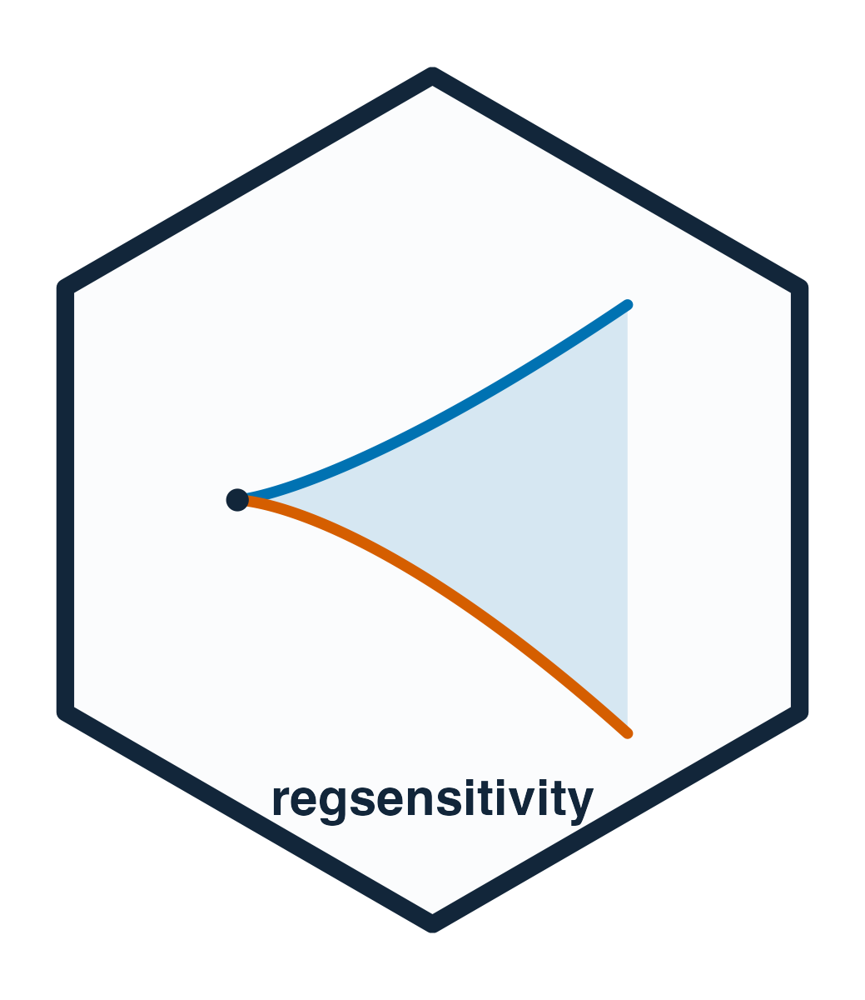

Extract results from a sensitivity analysis
Source:R/accessors.R
regsensitivity-accessors.RdAccessors for the quantities most often reported, so that scripts do not depend on how the result objects are laid out internally.
Usage
breakdown_point(x, ...)
# S3 method for class 'regsensitivity'
breakdown_point(x, signed = FALSE, ...)
# S3 method for class 'regsensitivity_boot'
breakdown_point(x, signed = FALSE, ...)
# S3 method for class 'regsensitivity_multi'
breakdown_point(x, ...)
breakdown_frontier(x, ...)
# S3 method for class 'regsensitivity'
breakdown_frontier(x, signed = FALSE, ...)
identified_set(x, ...)
# S3 method for class 'regsensitivity'
identified_set(x, ...)
sensitivity_params(x, ...)
# S3 method for class 'regsensitivity'
sensitivity_params(x, ...)
# S3 method for class 'regsensitivity'
coef(object, ...)
# S3 method for class 'regsensitivity'
nobs(object, ...)Arguments
- x, object
A result object.
- ...
Ignored.
- signed
Logical. The breakdown point is reported as a magnitude, which is the number quoted as "the breakdown point". With
signed = TRUEan Oster breakdown keeps the sign that records the direction of selection; seeregsen_breakdown().
Details
breakdown_point()returns the breakdown point. Forregsen_bounds()output it is a scalar (NAwhen the sweep does not define one); forregsen_breakdown()output it is one value per point of the frontier, in the order ofbreakdown_frontier(); forregsen_boot()output, the point estimate; forregsen_multi()output, one value per treatment, named by treatment.breakdown_frontier()returns the frontier as a data frame whose first column is named after the parameter swept (cbar,beta,rxbar,r2longormaxovb) and whose second isbreakdown.identified_set()returns the bounds of aregsen_bounds()sweep: one row per point, with the sensitivity parameters andbmin,bmax.sensitivity_params()returns the sensitivity parameters the analysis was run at, as a named list.coef()returns the short- and medium-regression coefficients on the treatment, the two estimates the sensitivity analysis starts from, andnobs()the number of observations used.
See also
as.data.frame.regsensitivity() for the full results table.
Examples
data(bfg2020)
f <- avgrep2000to2016 ~ tye_tfe890_500kNI_100_l6 + log_area_2010 + lat + lon
w1 <- c("log_area_2010", "lat", "lon")
bnds <- regsen_bounds(f, bfg2020, compare = w1, cbar = 0.1)
breakdown_point(bnds)
#> [1] 0.3905962
head(identified_set(bnds))
#> rxbar rybar cbar bmin bmax
#> 1 0.0000000 Inf 0.1 1.3854162 1.385416
#> 2 0.2377361 Inf 0.1 0.5599466 2.210886
#> 3 0.4754721 Inf 0.1 -0.3235995 3.094432
#> 4 0.7132082 Inf 0.1 -1.2922838 4.063116
#> 5 0.9509442 Inf 0.1 -2.3863884 5.157221
#> 6 1.1886803 Inf 0.1 -3.6708919 6.441724
coef(bnds)
#> short medium
#> 1.707838 1.385416
bk <- regsen_breakdown(f, bfg2020, compare = w1, cbar = c(0, 0.5, 1))
breakdown_frontier(bk)
#> cbar breakdown
#> 1 0.0 0.4044354
#> 2 0.5 0.3749327
#> 3 1.0 0.3749327
breakdown_point(bk)
#> [1] 0.4044354 0.3749327 0.3749327